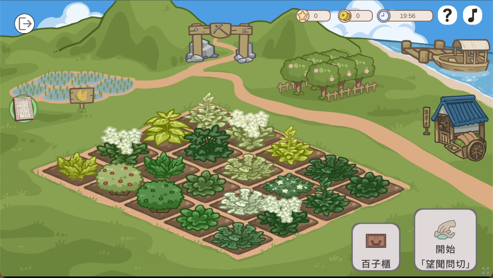
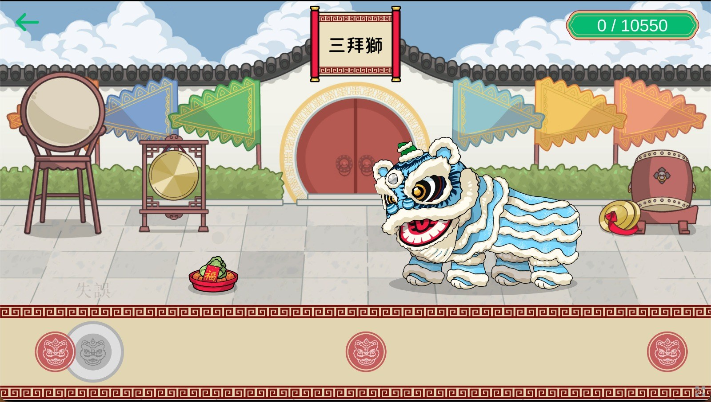

Play House — WebGL Platform
A multi-experience educational web platform — one shared Entrance and eight interconnected Unity WebGL theatres.

What is this project?
Play House is a browser-based educational platform comprising a shared Entrance experience and eight interconnected Unity WebGL theatre projects. Users authenticate through the Entrance, create a character, and navigate an interactive map to enter different educational experiences — art galleries, Chinese medicine learning, rhythm and lion-dance games, AI-assisted image creation, card-collection mini-games, and more. Each theatre is a standalone WebGL build connected through shared authentication, player data, and cross-project navigation.
What I contributed
Entrance — platform foundation and authentication
The shared login hub and interactive map — users authenticate, create a character, and choose which theatre to enter.
- Built and expanded the main gateway connecting users to individual theatre experiences.
- Implemented login, registration, character-skin selection, and gender-selection flows.
- Integrated Education Bureau/HK education login and SAML authentication.
- Built the interactive entrance map with selectable theatre buildings and transitions into other WebGL experiences.
- Implemented return-to-Entrance behaviour, deep-link redirection, and player-profile refresh when returning from a theatre.
- Built character creation and selection using Spine — 18 character skins, animation previews, gender selection, and character swapping.
- Added account settings, logout, password reset/change-password flows, and failed-registration account cleanup.
- Added I2 localization and converted Entrance content to localized Traditional Chinese text.
- Built responsive Entrance UI — authentication, pop-ups, school login, building selection, map zoom, and large-screen aspect-ratio fixes.
- Customized the browser HTML/CSS presentation, branding, logo, and responsive layout.
T1 — Chinese medicine learning game (~half of the project)
A stage-based learning game where players diagnose patients, match herbs and prescriptions, and progress through Chinese medicine scenarios.

- Built substantial parts of Stage 2 — tile-based map, hover outlines, visual feedback, and scene content.
- Added Stage 3 and Stage 3.1/3.2 content and transitions between Stages 1, 2, and 3.
- Implemented patient and doctor dialogue systems, patient Spine characters, walk-in/walk-out animations, and character selection.
- Built result, reward, and leaderboard interfaces — top-ten results and current user ranking.
- Added landing video, rules/tutorial content, sound effects, BGM, VFX, and medicine-completion animations.
- Worked on herb, prescription, patient, character, and dialogue content through CSV-driven data.
T2 — digital art gallery / Five Elements experience
A digital art gallery themed around the Five Elements — browse, filter, and inspect student artwork loaded from backend APIs.
- Developed the T2 landing experience around the Five Elements — animated elements, clouds, particles, colors, and VFX.
- Implemented painting and image loading from APIs with pagination, incremental loading on scroll, and loading-state feedback.
- Built the painting inspection page and tag/filter system using API-driven buttons and multi-state selection.
- Fixed scrolling, footer visibility, headers, canvas scaling, tweening, and multiple screen-size issues.
T3 — rhythm and lion-dance customization (full functional ownership)
A rhythm game paired with lion-dance customization — players follow beatmaps, score performances, and save custom lion skins.

- Inherited the existing T3 project, rebuilt its functional systems, and assumed end-to-end technical ownership of the WebGL experience.
- Implemented and debugged rhythm-game beatmaps, note detection, timing synchronization, and new content maps.
- Fixed pause behaviour so notes, music, and character animations stopped together.
- Built lion skin/customization selection with combined skins, saved selections, load/restore behaviour, and player-progress gating.
- Added recorded-video playback and download functionality.
T4 — AI-assisted image creation (full functional ownership)
An AI image-creation workshop — users compose prompts, pick styles and models, generate images, and review conversation history.
- Inherited the existing T4 project, reworked its full functional implementation, and assumed end-to-end technical ownership through production delivery.
- Built resource/style loading and dynamic prompt-style interfaces from backend data.
- Integrated AI image generation — prompts, model selection, styles, sizes, ratios, and image counts passed through frontend/backend APIs.
- Implemented and debugged generation workflows for Leonardo/Phoenix models and later Nano Banana V2 prompt data.
- Built single-player and workshop/multiplayer room checks using APIs and sockets.
- Built conversation/image history loading with reverse chronological display, pagination, and safe termination when no older messages remained.
- Added image preview, prompt copying, image copying, and horizontal resource scrolling.
T5 — support and production fixes
A story-driven theatre experience — my work here was targeted production support rather than primary feature ownership.
- Fixed a memory leak, WebGL dialogue-audio playback, missing font glyphs, browser HTML, and maintenance handling.
T6 — platform maintenance support
An additional theatre on the platform — shared browser integration and maintenance updates.
- Updated browser HTML presentation, missing-token redirection, and server-maintenance return-to-Entrance behaviour.
T7 — card-collection and mini-game experience
A card-collection world — explore a map, play card-based mini-games, and unlock collectibles tied to buildings and activities.
- Created the base Unity project and package configuration.
- Delivered the full initial project flow — card-based mini-games, tutorial flows, card-placement activities, and quit behaviour.
- Integrated APIs for retrieving and saving T7 player/game data.
- Built card collection and unlocking, card details, lock states, completion effects, and all-cards-collected flow.
- Added character Spine assets, character selection, landing content, maps, BGM, UI particles, and responsive layout fixes.
T8 — 3D movement and WebGL support
A 3D exploration experience — movement, camera, and environmental presentation in the browser.
- Implemented initial player movement, camera movement, floor setup, skybox/lighting, and browser-page design.
Senior / technical project lead (from T1 onward)
- Joined and helped lead client meetings — requirements, feedback, priorities, and delivery expectations.
- Translated client feedback into technical tasks and implementation decisions.
- Helped plan development sequence, milestones, bug-fixing priorities, and releases across multiple Unity projects.
- Coordinated work between developers, backend/API work, art/content, and client-facing deliverables.
- Continued contributing production code while reviewing progress and helping unblock technical problems.